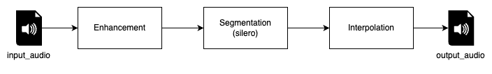
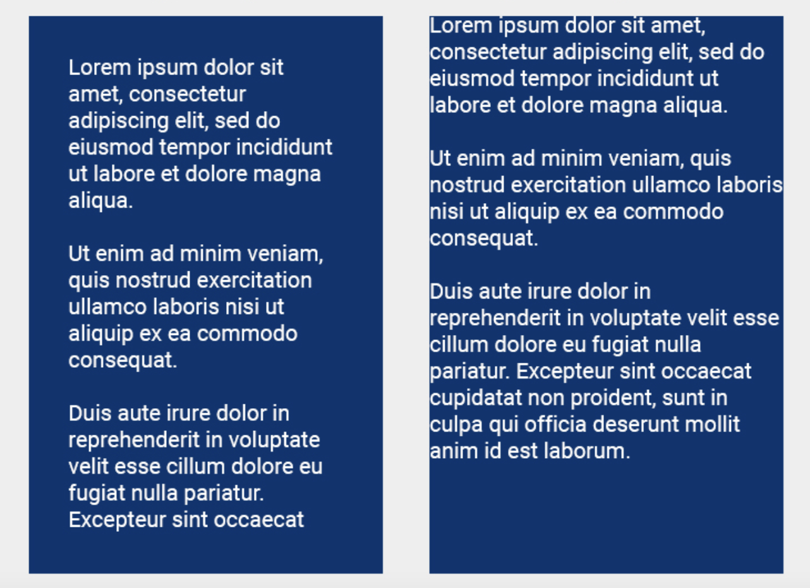

我开发的口语跟读练习工具 RAM
平时，我习惯在跑步、散步或通勤时做一些口语跟读练习。散步或通勤时还好，在手机上来回播放、暂停音频即可，但这种方法不适合在跑步中使用。另外，北京入冬后，在室外这么干容易生冻疮。于是我就想：能不能让音频自动地播放一句，停留一段时间让我跟读，然后再播下一句？
问题分析
拿到一段音频，我们的程序应该从什么位置开始播放？播放到哪里暂停？下一段又从何处继续？
首先看一个最理想的场景，假设给定的音频就是像 Lex Fridman 的播客节目或一节公开课，录制得十分干净，只有人声及人声之间的停顿，这时一个简单易行的方法就是直接按照停顿来切分。但如果母语者一口气说了一整段话，切出来的句子就会比较难跟读。原因在于一般英语母语者在对话中的语速在 120-150 词/分钟左右，如果切出来的音频是 20 秒，就需要连续跟读 40-50 词，这对母语者来说恐怕都是一个不小的挑战；假设给定的音频自始至终都有背景音乐，光靠停顿来切分的方案就失效了。这时程序需要能区别人声与其它声音；如果音频中说话人的节奏极具特色，充满戏剧化，比如马丁路德金的 “I… have a dream”，他会在说完主语的时候就停顿，程序很容易将它断成两个句子：“I” 和 “have a dream”。要在这种场景下做得好，程序还得理解内容。从找到声音，到区别声音，再到理解内容，切分效果逐渐变好，难度也逐渐变大。
到目前为止的讨论都只考虑到了技术层面的要求，忽略了使用者的需求。假设我是初学者，一次只能跟读 6-10 个单词，这时尊重原始音频内容的断句并不一定适合我，我希望能把句子断得更小、更短一些。不仅是断句，母语者的语速过快，能控制播放的速度和停顿的时长也很重要，这样我就可以循序渐进地练习。
需求提炼
音频的断句：
- 准确率高：识别的段落尽可能是人声
- 召回率高：所有人声段落尽可能找到
- 符合语义：断句的语义尽可能连贯
用户的支持：
- 设置难度：不同难度的语速不同、停顿时长不同、断句长度不同
RAM
为了满足上述需求，我开发了命令行工具 RAM (Repeat After Me)。RAM 支持用户设定生成音频的跟读难度，难度越低，跟读音频的播放速度越慢，断句越短，留白时间越长。
Demo
示例音频来自 Brian Harvey 教授在某堂课上的节选，讲述为什么不要作弊：
工作原理
输入一个音频，RAM 会按照以下步骤生成跟读音频：

- 增强：根据难度设置给原音频降速，后将采样率标准化，方便后续步骤处理；
- 断句：利用 snakers4/silero-vad 给原始音频断句，即找到人声的起止位置；
- 插值：在每段人声之后，根据难度设置插入一段空白停顿，生成最终跟读音频。
断句
snakers4/silero-vad 能检测到原始音频中的人声段落，并给出每个段落是人声的概率(信心)。RAM 会根据给定的难度，找到符合难度对应的句子长度范围内概率最低的点，作为断句点。
突兀
在 Web 开发中，如果一个文本区域没有设置 padding，会给人一种视觉上的突兀感，如下图所示：

类似的突兀感在音频断句上也会出现。直接使用模型的断句结果，音频开始播放后没有任何停顿就进入人声，就像没有前奏就开始唱歌。因此 RAM 并没有直接使用模型的断句结果，而是先对原始断句结果处理后才进入下一步骤。
尾声
由于 RAM 借用的模型 snakers4/silero-vad 具备跨语言识别的能力，RAM 的作用并不局限于英文口语练习。我偶尔也会跟读一些四川地方的播客节目 :)，如果你恰好也喜欢学习语言，希望 RAM 也能帮助到你。